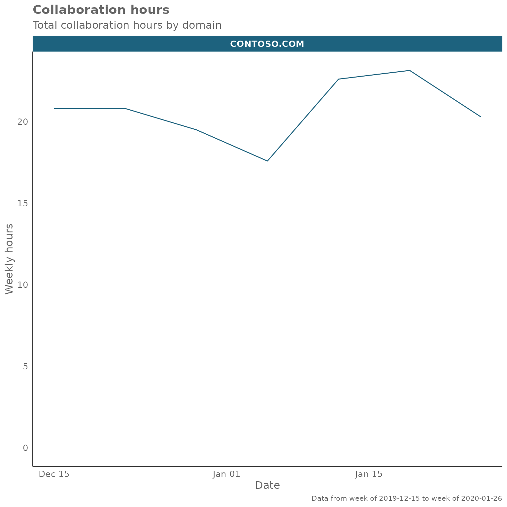
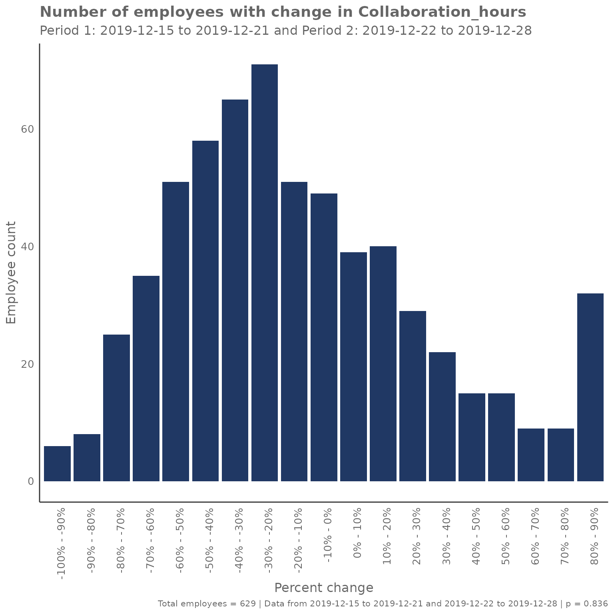
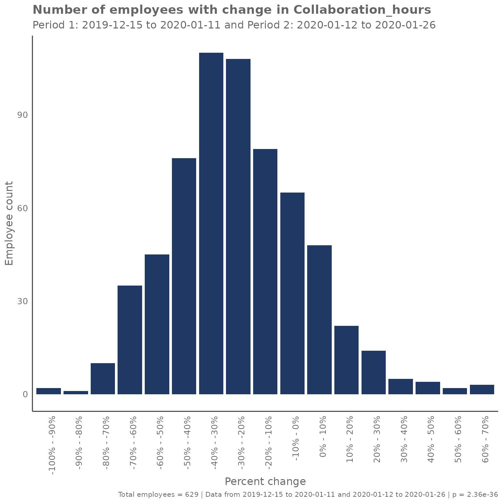

vignettes/Change-over-time.Rmd
Change-over-time.RmdWhat has changed?
Business leaders often want to understand how their business is
performing so they can make data-driven decisions about how to work more
efficiently and effectively. Identifying what has changed, and why, can
lead business leaders to update their operations and strategy to improve
business results. This means that one of the most common analytical asks
for Workplace Analytics analysts is, “What has changed?” The
wpa package offers two techniques to identify
significant changes in Workplace Analytics metrics over time:
period_change() and IV_by_period().
For example, leaders at Contoso Corporation might be interested in
how overall levels of digital collaboration are changing over time. We
can look at this question with the built-in sq_data dataset
and the Collaboration_hours metric to show how an analyst
could answer that.
First, let’s load the wpa package:
# Ensure Date column is in Date class for downstream functions
sq_data <- wpa::sq_data %>%
dplyr::mutate(Date = as.Date(Date, format = "%m/%d/%Y"))
sq_data %>%
create_line(hrvar = "Domain",
metric = "Collaboration_hours")
This chart provides us with a good starting point, as we can see a
change in collaboration activity throughout. We will study the change
across two adjacent weeks in the observed period. The next step is to
refine that insight, which we’ll do with the
period_change() function.
period_change()
The period_change() function returns a histogram of how
many people changed a specific metric over two time periods, the
before and after periods. It calculates the
number or percentage of people whose metric changed by a particular
percentage, and then helps us understand whether this overall change is
statistically significant.
In the scenario with Contoso, we can see that collaboration hours step down throughout November and December – but is this significant?
First, let’s compare the change in collaboration for two adjacent weeks early in the observed period.
# Derive two adjacent weekly windows from available dates
all_dates <- sort(unique(sq_data$Date))
min_date <- min(all_dates, na.rm = TRUE)
max_date <- max(all_dates, na.rm = TRUE)
before_start <- min_date
before_end <- min(min_date + 6, max_date)
after_start <- min(before_end + 1, max_date)
after_end <- min(after_start + 6, max_date)
sq_data %>%
period_change(
compvar = "Collaboration_hours",
before_start = as.character(before_start),
before_end = as.character(before_end),
after_start = as.character(after_start),
after_end = as.character(after_end)
)
This function compares the collaboration hours of the population
between the before period (week of November 3) and the
after period (week of November 10). It places each
employee’s data into bins according to how much their collaboration time
changed between the two periods. For example, we see in the figure above
that 107 people had their collaboration hours decrease by between 0 and
10%. We also see that 67 had their collaboration hours increase by
between 0 and 10%. These 174 people had a total collaboration time
during the second week of November that was within 10% of their
collaboration time during the first week of November (so, it was more or
less stable).
In this way, we end up with a distribution of how employee collaboration hours have changed between the two periods. As the distribution appears relatively normal and centered on a mode of 30% to -20%, we see that most employees had their collaboration hours decrease, even though a spike of employees, seen in the bar at the far right, had their collaboration hours increase by at least 90 percent.
We also get a p-value (shown at the right of the image caption) that tells us whether the two samples are statistically significantly different. The smaller the value, the more significant the differences. Typically, we look for a significance level of less than 0.05, but the exact threshold you pick depends on how sure you need to be. In this case, the p-value of 0.0629 is too large for us to be sure at the 95% confidence level that there has been a change in collaboration activity between the first two weeks of November.
However, if we compare two longer adjacent ranges in the observed period, we may see a significant difference in collaboration hours:
# Build two longer adjacent ranges (up to 4 weeks each) within available dates
long_before_start <- min_date
long_before_end <- min(min_date + 27, max_date)
long_after_start <- min(long_before_end + 1, max_date)
long_after_end <- min(long_after_start + 27, max_date)
sq_data %>%
period_change(
compvar = "Collaboration_hours",
before_start = as.character(long_before_start),
before_end = as.character(long_before_end),
after_start = as.character(long_after_start),
after_end = as.character(long_after_end)
)
The p-value here is close to zero. This change is unsurprising as we saw collaboration hours decrease sharply during the first week of December.
This analysis can be helpful because looking casually at how the mean has changed might not uncover significant changes in behavior. For example, if, in comparing two months of data, we saw that the average collaboration hours stayed the same, we would also want to see the underlying distribution to know whether that means everyone was collaborating for the same length of time (at one extreme), whether half the employees had stopped collaborating and half had doubled their collaboration, or something in between.
IV_by_period()
While period_change() is great for looking at a specific
collaboration metric, we sometimes want to use wpa to
tell us all the metrics that have changed significantly. The
IV_by_period() function does just that by using the
Information Value method (see more here: How to
identify potential predictors for survey results using information
value. With over 60 metrics in the sq_data dataset, it
might not be practical to look at each metric individually, and this is
where the IV_by_period() function can be helpful.
Essentially, the IV_by_period() function tells us which
metrics in the dataset best differentiate the before and
after time periods. The higher the Information Value, the
more different that metric is between the two periods (because it better
explains the difference between those two groups).
Looking at the change between these two adjacent weeks, we see very small Information Values. This tells us that the collaboration activity is very similar between those two weeks.
sq_data %>%
IV_by_period(
before_start = as.character(before_start),
before_end = as.character(before_end),
after_start = as.character(after_start),
after_end = as.character(after_end)
)
#> Variable IV
#> 1 Open_2_hour_blocks 8.885228e-02
#> 2 After_hours_email_hours 7.844246e-02
#> 3 Collaboration_hours 7.252189e-02
#> 4 Open_1_hour_block 6.760490e-02
#> 5 Total_focus_hours 6.072916e-02
#> 6 Generated_workload_email_recipients 5.781364e-02
#> 7 Email_hours 5.164177e-02
#> 8 After_hours_meeting_hours 5.016773e-02
#> 9 Meeting_hours 4.609411e-02
#> 10 Meeting_hours_during_working_hours 4.033437e-02
#> 11 Generated_workload_email_hours 3.923778e-02
#> 12 Working_hours_collaboration_hours 3.877425e-02
#> 13 Working_hours_instant_messages 3.870642e-02
#> 14 Total_emails_sent_during_meeting 3.801950e-02
#> 15 Meetings_with_manager 3.462175e-02
#> 16 Collaboration_hours_external 3.328224e-02
#> 17 Emails_sent 3.259409e-02
#> 18 After_hours_collaboration_hours 3.219590e-02
#> 19 Generated_workload_meeting_attendees 3.179878e-02
#> 20 Meeting_hours_with_manager 3.061831e-02
#> 21 Instant_Message_hours 2.968679e-02
#> 22 Working_hours_email_hours 2.799709e-02
#> 23 Generated_workload_meeting_hours 2.772777e-02
#> 24 Generated_workload_meetings_organized 2.556975e-02
#> 25 Instant_messages_sent 2.469662e-02
#> 26 Internal_network_size 2.157814e-02
#> 27 Call_hours 2.097760e-02
#> 28 Redundant_meeting_hours__organizational_ 2.036748e-02
#> 29 Generated_workload_call_participants 2.007310e-02
#> 30 Low_quality_meeting_hours 1.983402e-02
#> 31 Workweek_span 1.934623e-02
#> 32 Generated_workload_instant_messages_hours 1.873502e-02
#> 33 Meetings 1.707124e-02
#> 34 Time_in_self_organized_meetings 1.626740e-02
#> 35 Multitasking_meeting_hours 1.581651e-02
#> 36 Working_hours_in_calls 1.565019e-02
#> 37 Generated_workload_calls_organized 1.136029e-02
#> 38 Generated_workload_instant_messages_recipients 1.114047e-02
#> 39 After_hours_in_calls 1.070522e-02
#> 40 After_hours_instant_messages 1.051928e-02
#> 41 Meeting_hours_with_manager_1_on_1 9.942948e-03
#> 42 Total_calls 8.559826e-03
#> 43 Meetings_with_manager_1_on_1 8.224275e-03
#> 44 Generated_workload_call_hours 7.963529e-03
#> 45 Networking_outside_company 5.210268e-03
#> 46 Conflicting_meeting_hours 4.296344e-03
#> 47 External_network_size 3.429116e-03
#> 48 Manager_coaching_hours_1_on_1 9.566463e-04
#> 49 Networking_outside_organization 1.293146e-05
#> 50 Meetings_with_skip_level 0.000000e+00
#> 51 Meeting_hours_with_skip_level 0.000000e+00
#> 52 Redundant_meeting_hours__lower_level_ 0.000000e+00
#> 53 Layer 0.000000e+00
#> 54 HourlyRate 0.000000e+00If we look at the differences between the two longer ranges, we often see higher Information Values that reflect a bigger difference in collaboration activity. Although the Information Value does not tell us how these metrics changed, it provides a good starting point for further analysis to determine what changed in those metrics.
sq_data %>%
IV_by_period(
before_start = as.character(long_before_start),
before_end = as.character(long_before_end),
after_start = as.character(long_after_start),
after_end = as.character(long_after_end)
)
#> Variable IV
#> 1 Total_calls 7.671961e-01
#> 2 Call_hours 5.875945e-01
#> 3 Working_hours_in_calls 5.796400e-01
#> 4 Generated_workload_calls_organized 1.973607e-01
#> 5 Generated_workload_call_participants 1.860626e-01
#> 6 Generated_workload_call_hours 1.622225e-01
#> 7 Instant_Message_hours 1.308147e-01
#> 8 Generated_workload_instant_messages_hours 1.255466e-01
#> 9 Email_hours 1.219854e-01
#> 10 Emails_sent 1.214857e-01
#> 11 Working_hours_instant_messages 1.177612e-01
#> 12 Working_hours_email_hours 1.151957e-01
#> 13 Instant_messages_sent 1.133614e-01
#> 14 After_hours_instant_messages 1.128882e-01
#> 15 After_hours_in_calls 1.022646e-01
#> 16 Generated_workload_email_hours 9.407728e-02
#> 17 Workweek_span 8.913363e-02
#> 18 After_hours_email_hours 8.692800e-02
#> 19 Collaboration_hours 8.025049e-02
#> 20 Generated_workload_email_recipients 7.475155e-02
#> 21 Internal_network_size 5.994778e-02
#> 22 Total_emails_sent_during_meeting 5.866986e-02
#> 23 Generated_workload_instant_messages_recipients 4.911751e-02
#> 24 Working_hours_collaboration_hours 4.768011e-02
#> 25 After_hours_collaboration_hours 4.448160e-02
#> 26 Low_quality_meeting_hours 3.972242e-02
#> 27 Collaboration_hours_external 3.650951e-02
#> 28 Meetings 3.286909e-02
#> 29 Meeting_hours_during_working_hours 3.252934e-02
#> 30 Open_2_hour_blocks 3.143632e-02
#> 31 Total_focus_hours 3.118997e-02
#> 32 Meeting_hours 3.111240e-02
#> 33 Multitasking_meeting_hours 3.003658e-02
#> 34 Conflicting_meeting_hours 2.951555e-02
#> 35 External_network_size 2.831961e-02
#> 36 Redundant_meeting_hours__organizational_ 2.599567e-02
#> 37 Open_1_hour_block 2.552943e-02
#> 38 Generated_workload_meetings_organized 2.039883e-02
#> 39 Generated_workload_meeting_attendees 1.741918e-02
#> 40 Time_in_self_organized_meetings 1.704880e-02
#> 41 Meeting_hours_with_manager 1.667117e-02
#> 42 After_hours_meeting_hours 1.582451e-02
#> 43 Generated_workload_meeting_hours 1.573999e-02
#> 44 Meetings_with_manager 1.412104e-02
#> 45 Networking_outside_company 5.971421e-03
#> 46 Meeting_hours_with_manager_1_on_1 1.063986e-03
#> 47 Meetings_with_manager_1_on_1 9.066177e-04
#> 48 Manager_coaching_hours_1_on_1 4.284142e-05
#> 49 Networking_outside_organization 1.294596e-05
#> 50 Meetings_with_skip_level 0.000000e+00
#> 51 Meeting_hours_with_skip_level 0.000000e+00
#> 52 Redundant_meeting_hours__lower_level_ 0.000000e+00
#> 53 Layer 0.000000e+00
#> 54 HourlyRate 0.000000e+00We can use this method to answer the Contoso leadership’s question
about how collaboration activity has changed. Now that we know the top
metrics that have changed, we can look at each of them in more detail,
including with the period_change() function, to more fully
describe how collaboration differs going into the end of the year.
We’ve introduced two functions in the wpa package
that help analysts identify changes in collaboration behavior over time.
period_change() can identify the changes in a specific
metric, while IV_by_period() will help the analyst find the
metrics with the biggest changes.
Hope you found this useful! If you have any suggestions or feedback, please visit https://github.com/microsoft/wpa/issues.